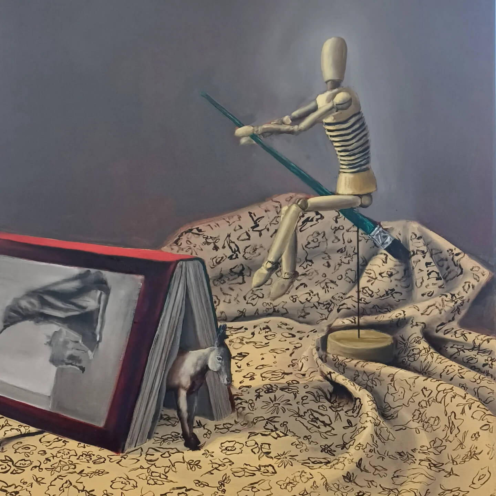
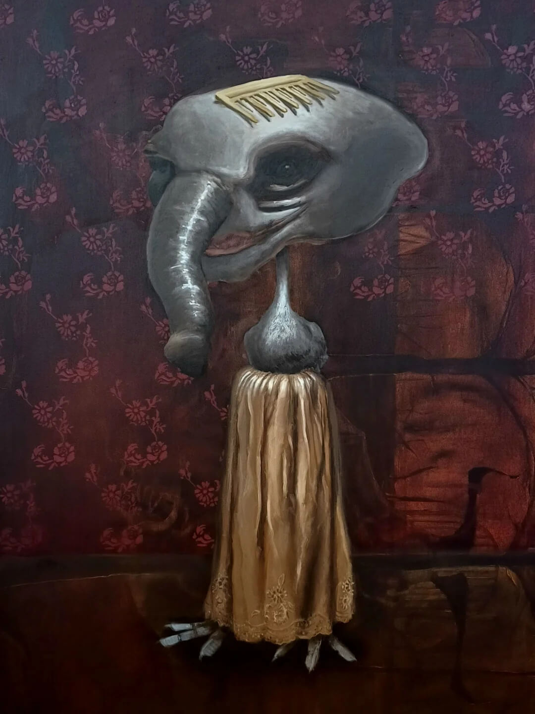
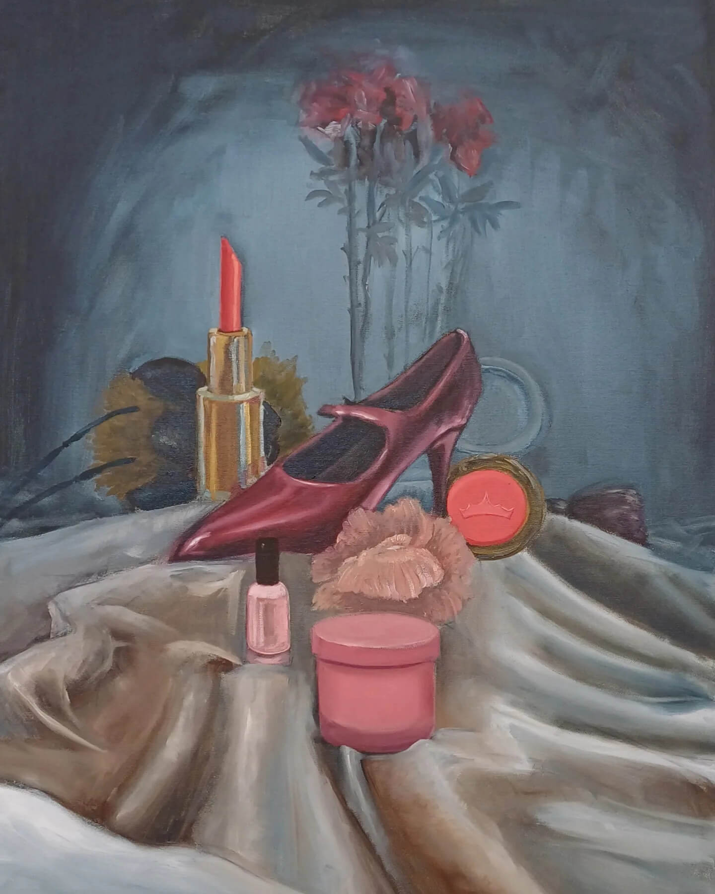
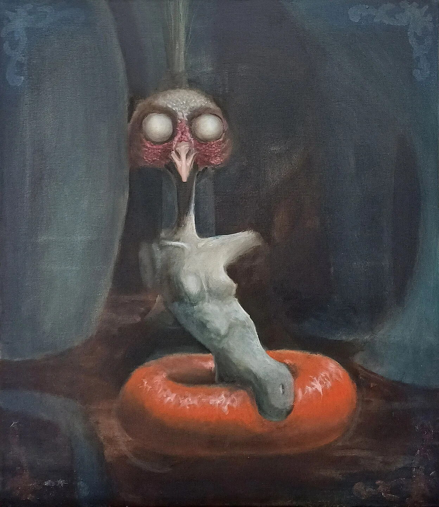
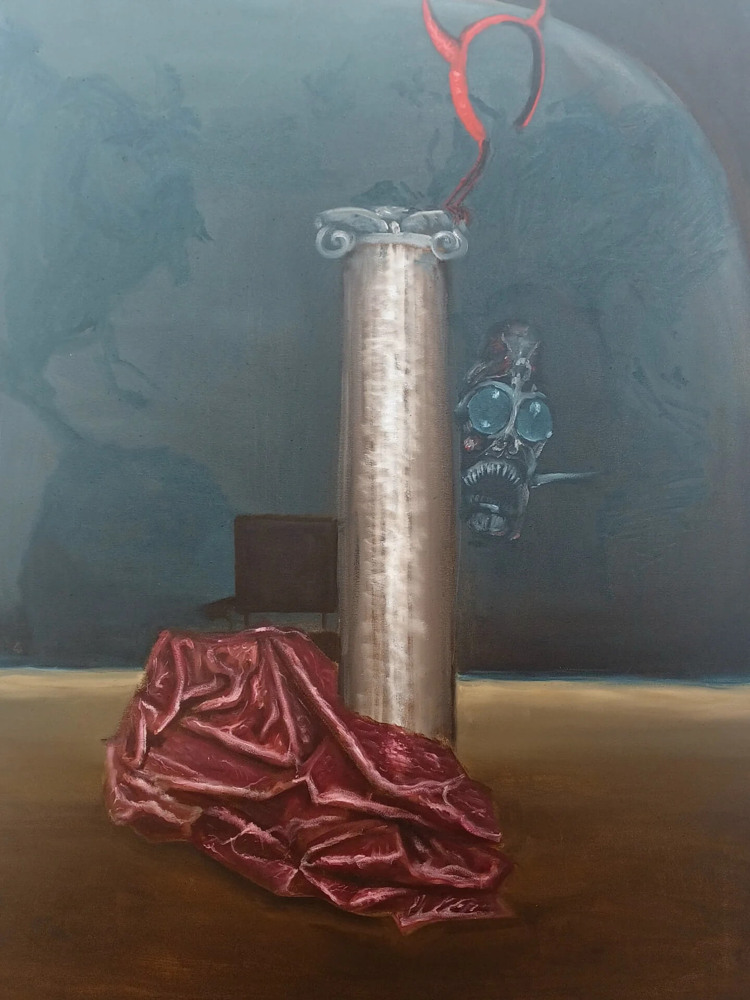
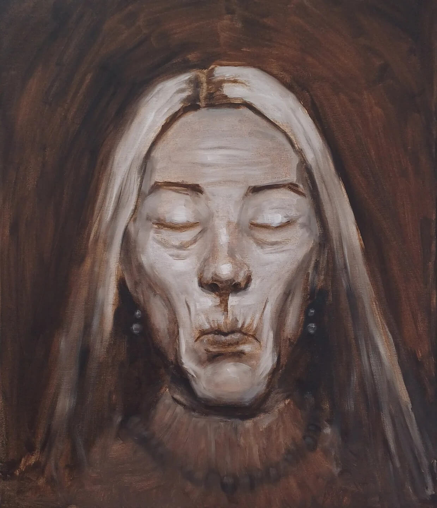
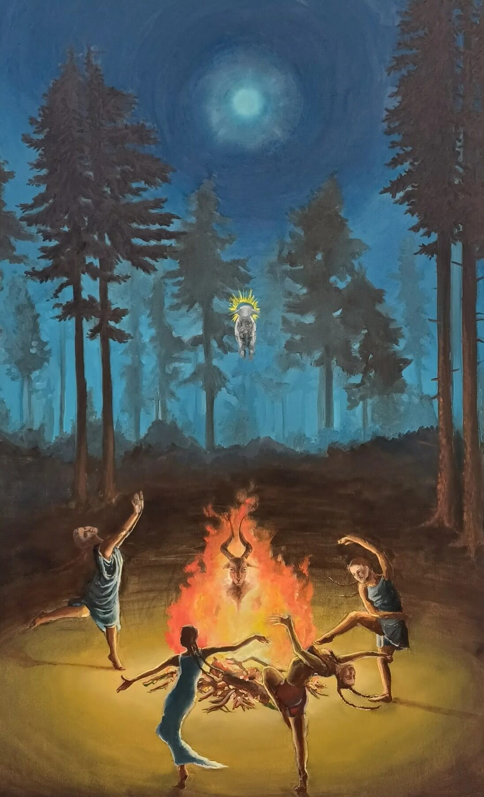

Contemporary Witches Identifiers IV
Inquire about this piece7 works

Contemporary Witches Identifiers IV
Inquire about this piece
The Inner Beauty I
Inquire about this piece
Contemporary Witches Identifiers II
Inquire about this piece
The Inner Beauty II
Inquire about this piece
Contemporary Witches Identifiers I
Inquire about this piece

The (Holy) Trinity
Inquire about this piece